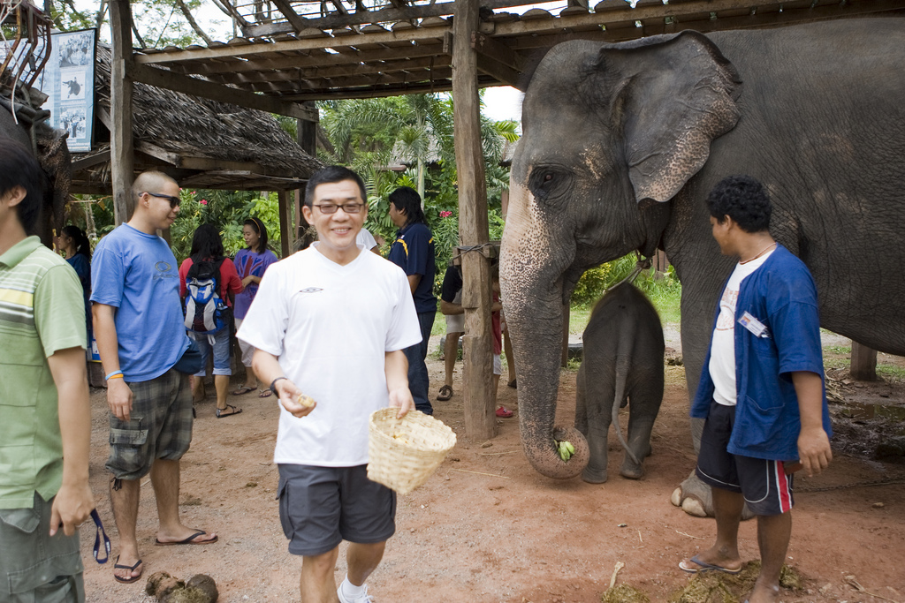

På vores Myanmar-rejser finder du ud af, hvorfor Myanmar kaldes ’Thailand som for 40 år siden’.
Holder du af unaturligt smuk natur, bjerge, søer, rismarker, floder - og en befolkning af forunderlig elegance og mildhed, er rejser til Myanmar noget for dig.
Horisonts rejser til Myanmar byder på det hele og er blandt vores gæsters absolutte favoritter.
Din oplevelse af at være kommet til et usædvanligt land på rejser til Myanmar skyldes også, at Myanmar igennem årtier har været lukket for omverdenen af et militærregime, der var besat af at beholde magten. Nu er grænserne åbne. Det gør Myanmar-rejser meget lettere. Selv om langt fra alt er godt, blæser der mildere politiske vinde, hvilket vi nyder godt af på vores rejser til Myanmar.
Et fabelagtigt turistland kommer således ud af sit skjul på rejser til Myanmar. Det er det paradoks, vi søger at forstå på vores Myanmar-rejser.
Vores Myanmar-rejser foregår altid i små grupper med hovedvægt på vores rejselederes unikke viden og personlige forhold til destinationen.

Hvorfor rejse til Myanmar?
Holder du af unaturligt smuk natur, bjerge, søer, rismarker, oder - og en befolkning af forunderlig elegance og mildhed, er rejser til Myanmar noget for dig. Horisonts rejser til Myanmar byder på det hele og er blandt vores gæsters absolutte favoritter.
På vores rejser til Myanmar er det nemt at for- veksle det tilbagestående med idyl og romantik, og den teknologiske udvikling er skam hastigt i gang i landets største by,Yangon.
Alligevel forbliver rejser til Myanmar en slags invitation til et kig tilbage til tiden - vi ser okser trække ploven gennem rismarker, munke, der lever asketiske liv i klostre, som de har gjort det i tusind år, og burmesiske kvinder, der pynter sig med blomster – i perfekt harmoni med deres vidunderlige smil.
Horisonts rejser til Myanmar giver dig et indblik i Myanmars kultur og forklarer landets særegne stil. Forklaringerne er mange. En væsentlig årsag ligger i burmesernes religiøse kulturarv, som du på vores rejser ser komme til udtryk i deres venlige og tilsyneladende fredfyldte livsstil.
Myanmar har igennem årtier været lukket for omverden af et militærregime, der var besat af at beholde magten. Nu er grænserne åbne. Selv om langt fra alt er godt, blæser mildere politiske vinde, hvilket vi nyder godt af under vores besøg i det smukke land. Et fabelagtigt turistland kommer således ud af sit skjul, hvis du vælger at rejse til Myanmar.
Vi har lavet rejser til Myanmar siden 2008, længe inden det gik op for andre rejsebureauer, at landet var et skatkammer at besøge. Vores Myanmar-rejser foregår altid i små grupper med hovedvægt på vores rejselederes unikke viden og personlige forhold til destinationen.
Hvorfor skal du rejser med os?
Lokal engelsktalende guide
Rejserne med engelsktalende rejseleder er til dig, der vil have en lokal vinkel og en rejseleder, der er vant til at håndtere grupper og har en stor viden om landets kultur, natur og historie. Vores engelsktalende rejseledere er nøje udvalgt og taler alle godt engelsk, er uddannede guider og har stor viden, som de er stolte over at formidle.
Tilfredse kunder
Vi bad i 2016 de af vores gæster, der har været med på en af vores Myanmar rejser om at bedømme deres oplevelser med rejsen – herunder landet som rejsedestination, deres guide samt vores service i forbindelse med købet af rejsen. Vores rejser til Myanmar scorede hele 4,8 ud fra en skala fra 1 til 5, med 5 som det højeste. Det kan vi da ikke være andet end fuldt ud tilfredse med!
Du kan gå ind og læse vores gæsters evalueringer under de forskellige Myanmar rejser. Vores håb er, at du herigennem kan få en indblik i, hvad der er er formålet med vores rejser til Myanmar – nemlig at tilbyde indsigtsfulde kulturrejser af høj kvalitet. Så tag med på vores Myanmar rejser og få en rejseoplevelse for livet.
Kort sagt:
Tag med os til Myanmar på rejser, der rykker dig.